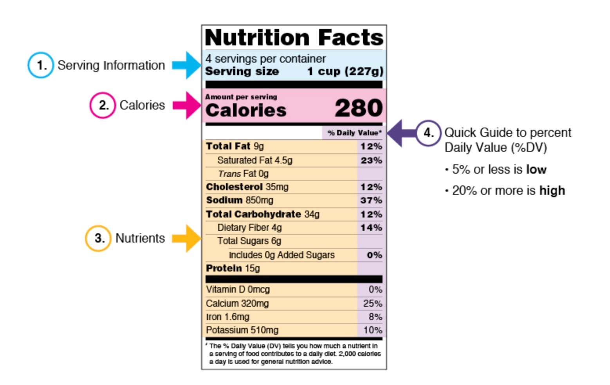

Grocery shopping is a common activity that the majority of people engage in on a weekly basis. Although it is such a common practice, reading food labels and understanding the meaning behind certain terms can be very frustrating for many consumers.
Between confusing health claims, extravagant packaging, and lengthy ingredient lists, it can be difficult to know which products can support your health goals. This guide will help ease that confusion and make your next grocery shopping trip feel like a breeze.

Where to Start?
Before reading food labels, it is helpful to understand your personal goals with food. Are you trying to reduce sodium consumption, eat more protein, increase your fiber intake, or simply creating a more balanced diet?
Having clear goals can help you navigate nutrition labels more efficiently and identify what foods and products serve your needs.
1. Serving Size
The serving size is the first thing you should look at when reading nutrition labels. All the nutritional information that follows will be based on this amount.
A product can seem like it is low on calories, added sugars, or sodium until you realize it is based on the serving size and not the total/full contents of the package.
Helpful Tip: Always compare the serving size with the amount you actually eat. A package may contain multiple servings.
2. Calories
Calories are all about the energy your body receives from food. The calorie listed on a nutrition label reflects the number of calories in one serving.
Calories by themselves do not tell much about the food's nutritional quality. It is necessary to consider the overall nutritional profile of the food.
3. Nutrients
The nutrient section provides helpful and valuable information about what the food contains. Some common nutrients found in nutrition labels are:
- Fiber
- Protein
- Vitamins (e.g., vitamin D, calcium, iron, and potassium)
- Saturated fats
- Added sugars
- Sodium
The last three mentioned are recommended to be consumed in moderation.
4. Daily Percentage Value
Daily percentage value indicates the amount of nutrients you are getting per each serving size. These amounts are understood as a reference and might not be an exact measure.
Remember: A 5% daily value (DV) or less is considered low, whereas a 20% DV or more is considered high.
This percentage can help you quickly compare products. If you are trying to increase a nutrient such as fiber, look for foods with a higher %DV. If you are limiting sodium or added sugars, choose foods with a lower %DV.
5. Ingredient List
The ingredient list can offer more information about the product than how it is marketed in the front part of the packaging.
Ingredients are listed by weight. The first ingredients listed will be the one with the greatest amount, following the rest of the ingredients in descending order.
When possible, choose foods with ingredients you recognize and foods where whole-food ingredients appear near the top of the list.
6. Watch Out for Marketing Strategies
Food manufacturers invest great amounts in marketing language that can sway and influence the consumer into buying certain products over others that may be more nutritious. As a consumer, you will often see phrases such as:
- "Natural"
- "Made with whole grains"
- "Multigrain"
- "Low fat"
- "Sugar-free"
- "Healthy"
- "Immune-supporting"
And so on. While some of these claims may be technically true, they do not automatically mean that a product is nutritious.
For example, a cereal labeled "made with whole grains" may still contain high amounts of added sugar. Likewise, a "fat-free" product may compensate by adding more sugar to improve flavor.
Key Takeaway: The front of the package is essentially advertising, while the Nutrition Facts panel and ingredient list provide the information you need to make informed decisions.